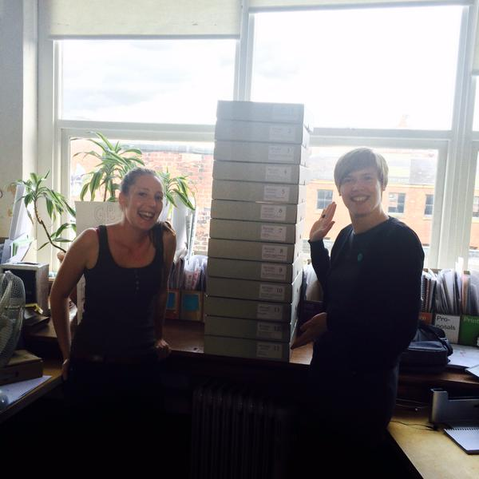

About this project
This project is a collaboration between The Cassowary Project and URBED. The project started as a chance discussion. Emily, an urban designer at URBED, wanted to do something for Hulme and Urbed’s 40th anniversary, Kim wanted to experiment with ways of presenting local history, and Sylvia had the archive experience and connections to train URBED in archival.
Why Hulme? It’s a fascinating place for us both professionally and personally. Hulme saw two major redevelopments in the last hundred years, the latter one partly completed by Urbed. It’s a fascinating place that’s always been a political hot potato: depending on who you talk to an uninhabitable slum, or a transformational place that sat outside normal society.
Delphine, intern at URBED catalogued the entire collection (13 boxes!) and created some wonderful maps of Hulme in it’s last two eras that you can see on the map. These are traced from maps held at Central Library’s Archives+. Kim and Phoebe made this website, which we hope to use as a model for other future history apps, you can check the source on GitHub.
Emily and Delphine with the newly boxed archive!
This is an evolving project: we hope others add in their own history, improve what we’ve written, and give us lots of perspectives on the turbulent history of Hulme. Not sure where to start? Try some of the links in the sidebar.
The Cassowary Project
The Cassowary Project is a new grassroots research project by Kim Foale and Sylvia Koelling investigating themes of place, identity, and history, based in Manchester, UK. We aim to develop innovative ways of exploring and engaging with local history: this website is our first major experiment in presenting history on the web. Read more about us on our blog.
URBED
URBED (Urbanism, Environment and Design) does what our name suggests we specialise in urban design and sustainability in an urban context. We work across the UK from our bases in Manchester and London and for public and private sector clients. Our background is in urban regeneration, something that remains close to our heart. This work is united by our core values of urbanism, community, environmental sustainability and design. URBED (Urbanism, Environment and Design) is an employee-owned co-operative.
2015 was our 40th anniversary and to celebrate we arranged some events and debates in cities all over the UK looking at places we have worked in and the different areas of our work. We hosted an event in Hulme to look back at the work David and Charlie carried out there. The activities and work done in Hulme ultimately evolved into the design practices and engagement processes URBED continue to use today. Read more about us on our website.
Other resources
Hulme-specific
Greater Manchester
- Archives Plus Flickr
- GMLives Catalogue
- Local Image Collection
- The Making of post-war Manchester 1945-74
- Mapping Manchester Plans
- MMU Visual Resources
Credits
- Kim Foale: project manager, code, content
- Emily Crompton: URBED coordinator, content
- Phoebe Queen: primary developer
- Delphine Hollebecq: maps, archiving, content
- Sylvia Koelling: archive training
Thanks to
- David Govier and Martin Dodge at Archives+ (Manchester Libraries, Information and Archives)
- Manchester City Council
- Robin Gower for help with GIS